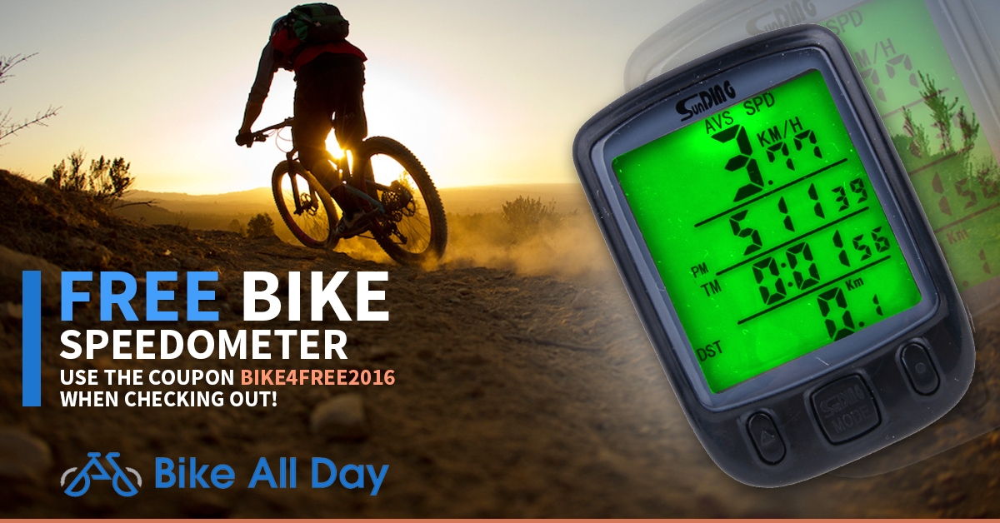

<div id="portfolio-page" class="portfolio-page-content">
    <div class="container">
        <div class="portfolio-nav">
            <div id="portfolio-close-button" class="portfolio-close-button">
                <a href="#portfolio"><i class="fa fa-close"></i></a>
            </div>
        </div>

        <div class="portfolio-title">
            <h1>Bike All Day</h1>
        </div>

        <div class="row">
            <div class="col-sm-7 col-md-7 portfolio-block">
                <div class="owl-carousel portfolio-page-carousel">
                    <div class="item">
                        
                    </div>
                </div>

                <script type="text/javascript">
                    jQuery(document).ready(function($){
                        $('.portfolio-page-carousel').owlCarousel({
                            smartSpeed:1200,
                            items: 1,
                            loop: true,
                            dots: true,
                            nav: true,
                            navText: false,
                            margin: 10
                        });
                    });
                </script>
            </div>

            <div class="col-sm-5 col-md-5 portfolio-block">
                <!-- Project Description -->
                <div class="block-title">
                    <h3>Description</h3>
                </div>
                <ul class="project-general-info">
                    <li><p><i class="fa fa-globe"></i> <a href="http://www.bikeallday.com" target="_blank">www.bikeallday.com (dead now)</a></p></li>
                    <li><p><i class="fa fa-calendar"></i>Summer 2015</p></li>
                </ul>

                <p class="text-justify">Bike All Day was meant to be a niche site for bike enthusiasts looking for
                cool cheap accessories. The value hypothesis was that cyclists would want a convenient and easily accessible site where
                they could browse and purchase add-ons for their bike.</p>
                <!-- /Project Description -->

                <!-- User & Market Research -->
                <div class="block-title">
                    <h3>User & Market Research</h3>
                </div>
                <p class="text-justify">Research was just done through a Google Survey sent out to 50 cyclists asking them
                about their experience purchasing bike accessories online. One prominent problem was price, so I sought
                to fix that. Surveys assume you know the right questions to ask, so not talking to customers in person
                was still a big mistake here.</p>
                <!-- /User & Market Research-->

                <!-- Execution & Methodology -->
                <div class="block-title">
                    <h3>Execution & Methodology</h3>
                </div>
                <p class="text-justify">I spent months learning WooCommerce to build this website. To keep prices low,
                I dropshipped (shipped directly from Chinese factories to purchaser), but I neglected to consider the
                quality concerns and didn't assess how much customers would be willing to sacrifice quality for price.
                This could have been preemptively addressed had I talked to customers or launched a site with just one
                    featured product to test whether customers would buy that (assuming the product doesn't have variations
                    that the user may want).
                I also advertised directly through Facebook ads, hoping for them to click the ad and make a purchase
                straightaway.</p>
                <!-- /Execution & Methodology-->

                <!-- Outcome -->
                <div class="block-title">
                    <h3>Outcome</h3>
                </div>
                <p class="text-justify">I had only $170 in sales throughout the lifetime of the website with ~$85 spent.
                People were not very likely to convert into a paying customer after merely clicking a Facebook ad.</p>
                <!-- /Outcome-->

                <!-- Lessons -->
                <div class="block-title">
                    <h3>Lessons</h3>
                </div>
                <p class="text-justify">I found that while my prices were low, consumers wouldn't immediately buy
                    something from a site they saw in an Facebook ad. I should have built trust by getting people to
                    like my page and then advertising to those. The half of my value hypothesis about wanting cheap
                products was right, but I failed to consider the trust that customers desired in shops. Simple user
                experience testing could have solved this.</p>
                <!-- /Lessons-->

            </div>
        </div>
    </div>
</div>
